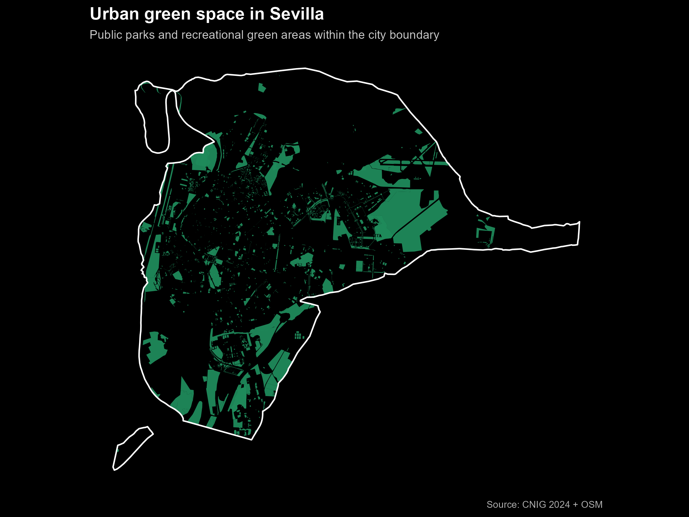

Another Tale of Two Cities: When Green Isn’t for People: Seville and Arequipa
In the first entry of this series, I compared green space access in London and Lima, highlighting how historical planning decisions and institutional capacity shape urban access to nature. In this second instalment, I turn to two very different cities: Seville, Spain, and Arequipa, Peru.
At first glance, both cities appear relatively “green” when viewed from above. Yet a closer look reveals a crucial distinction: not all green space is green space for people. Fields, farms, and cultivated land may dominate the urban landscape in some cities, while accessible parks and recreational areas remain scarce.
This article explores that distinction by quantifying and mapping green areas in Seville and Arequipa, with particular attention to who green space is actually for.
Why Seville and Arequipa?
Seville and Arequipa are not obvious twins. They differ in income levels, climate, and institutional context. Yet they share several characteristics that make comparison meaningful:
- Both are historical regional capitals, not national capitals
- Both have compact urban cores surrounded by peri-urban land
- Both experience hot climates, where green space plays a critical role in thermal comfort and public health
- Both are cities where urban expansion has increasingly collided with environmental constraints
Most importantly, they illustrate two very different models of how “green” land is distributed within metropolitan boundaries. Moreover, as someone born and raised in Arequipa, this analysis reflects a personal interest in better understanding access to green areas in the city. Table 1 presents the main demographic characteristics.
Table 1: Demographic Comparison
| Dimension | Seville Municipality | Metropolitan Arequipa |
|---|---|---|
| Area | 140 km² | 680 km² |
| Population (2024) | 690,000 | 1,000,000 |
| GDP per capita, PPP (2024) | $57,000 | $17,800 |
Notes: The GDP per capita (PPP, current international $) figures correspond to Spain for Seville and Peru for Metropolitan Arequipa.
Source: Author’s analysis, World Bank (2024); Wikipedia.
Data and Methodology
The analysis uses OpenStreetMap (OSM) polygon data to identify green areas, spatially clipped to official administrative boundaries:
- Seville: municipal boundary from Spain’s National Geographic Institute (CNIG)
- Arequipa: metropolitan districts from Peru’s National Institute of Statistics and Informatics (INEI)
For both cities, green areas were extracted using consistent OSM tags (parks, gardens, forests, grassland, etc.). However, for Arequipa, the analysis goes one step further by separating green land into two conceptually distinct categories:
- Agricultural green
- Farmland
- Orchards
- Plant nurseries
- Other cultivated land
- Urban green (parks & recreation)
- Public parks and gardens
- Sports pitches
- Recreational grounds
- Natural urban vegetation
All geometries were re-projected into appropriate equal-area coordinate systems before computing surface areas and shares.
Results
Seville: Green Space as Urban Infrastructure
Seville shows a relatively high and coherent level of public green space coverage at 18%. Parks, gardens, and recreational areas are well integrated into the urban fabric, with large continuous green spaces such as Parque de María Luisa complemented by smaller neighbourhood parks.
While green space distribution is not perfectly uniform, the dominant pattern shows that in Seville, most green land within the city boundary is intended for public use. This makes Seville a useful benchmark for what green access can look like in a consolidated European city with decades of planned green infrastructure investment.

Arequipa: Green, but Not Green for People
At the scale of Arequipa metropolitan area, the city appears surprisingly green. However, once agricultural land is separated from recreational green space, a very different picture emerges.
Table 2: Composition of green areas in Arequipa metropolitan area
| Type of green area | Area (km²) | Share of total green | Share of city area |
|---|---|---|---|
| Agricultural green | 59 | 85% | 8.7% |
| Urban green (parks & recreation) | 10 | 15% | 1.5% |
Source: Author’s analysis based on OSM and INEI
In total, green areas account for about 10% of Arequipa Metropolitan’s land area. Yet only 1.5% of the city consists of parks and recreational green spaces.
The vast majority of green land is agricultural — concentrated along the city’s periphery and river valleys — and is largely inaccessible to residents for daily recreation.
This distinction is critical. From a satellite or statistical perspective, Arequipa may appear moderately green. From the perspective of a resident seeking shade, leisure, or respite from heat, the city is far less so.
To make this distinction visible, the analysis produces a single map for Arequipa with three elements:
- Metropolitan boundary (white outline)
- Agricultural green (light green)
- Urban green spaces (dark green)
We can see that green clusters are not where most people live — and not where they can relax. By contrast, Seville’s map shows green areas distributed as functional urban infrastructure rather than residual land.

Key Insights
- Green coverage alone is a misleading metric. Counting hectares without distinguishing land use overstates access in cities where agriculture dominates.
- Arequipa’s green space is productive, not recreational. Agricultural land plays an important economic and environmental role — but it does not substitute for parks.
- Urban form matters. Seville’s green spaces are embedded within neighbourhoods; Arequipa’s are largely peripheral.
- Heat and climate risks amplify the problem. In hot, high-altitude cities like Arequipa, the absence of accessible green areas has direct implications for health and liveability.
Policy Implications
The policy takeaway is not that agricultural land should be replaced — quite the opposite.
For Arequipa
- Protect agricultural green areas as environmental and cultural assets
- Explicitly plan for recreational green space, especially in dense districts
- Prioritise pocket parks, shaded corridors, river-adjacent public greenways
For Seville
- Maintain investment in public green infrastructure
- Focus on connectivity between green spaces
- Promote equitable access across neighbourhoods
- Prioritise heat-resilient urban design as temperature rise
Conclusion
Seville and Arequipa illustrate a fundamental lesson in urban planning: Green space is not just about land cover, it is about access, purpose, and people. Cities can appear green while remaining inhospitable to daily life. Measuring and mapping green areas with attention to how they are used reveals a more honest picture and a clearer path for policy.
In the end, the relevant question is not “How green is your city?” It is: “How green is your city for the people who live there?”
Interactive Maps
Interactive map for Seville
The interactive map below displays the share of green areas in the Seville municipality. It was not possible to obtain the district level geometries from the Spanish National Geographic Institute.
Source: OpenStreetMap, CNIG. Author’s analysis. —
Interactive map for Metropolitan Arequipa
This interactive map shows the proportion of green areas by district in Arequipa metropolitan area, including agriculture and recreational green areas.
Source: OpenStreetMap, INEI. Author’s analysis.
References
- Instituto Geográfico Nacional (CNIG). (2025). Límites municipales, provinciales y autonómicos. https://centrodedescargas.cnig.es/CentroDescargas/informacion-geografica-referencia
- Instituto Nacional de Estadística e Informática (INEI). (2023). Límites distritales del Perú (District boundaries).
- OpenStreetMap contributors. (2025). OpenStreetMap planet dump. Available under the Open Database License (ODbL). https://www.openstreetmap.org/copyright
- World Bank. (2024). World Development Indicators.
Data licences & notes:
- OpenStreetMap data are provided under the Open Database License (ODbL). Users may copy, modify, and publish OSM-derived data provided derivative data are shared under the same licence and attribution is given.
Code & reproducibility:
All analysis code, processing scripts and the instructions to reproduce the maps are available on GitHub: green_cities_part_2 repository.